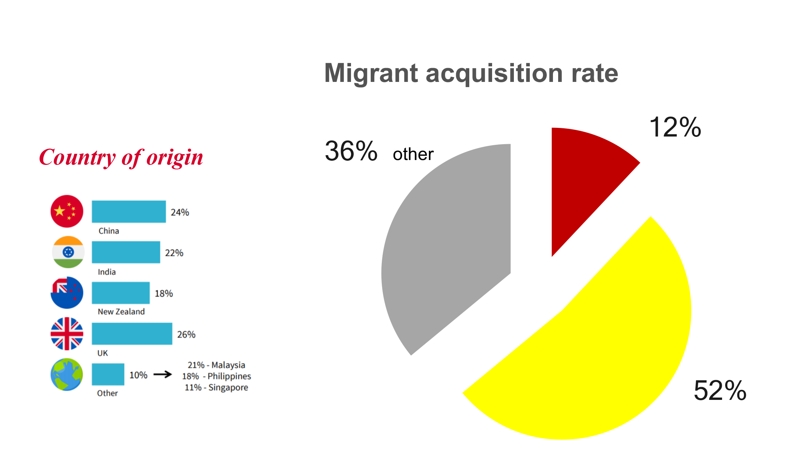

Problem Statement
Non-English speaking migrants struggle to use Westpac Digital banking due to its complexity and language barriers. This leads to low digital adoption, increased branch visits and poor NPS in a significant sector, as migrants are forecasted to contribute $1.6 trillion to Australian GDP by 2050
1

Interviewed customers and branch managers
research & data
Interviewed customers and branch managers
Analysed internal and external research
2
Our solution
Less reliant on branches
Independence
Breaking down complexity
Recognising cultural differences
Empowering
Streamlining features
3
Our solution
Existing platform = Existing security and controls
Privacy, compliance and security concerns all considered
Tools to sign off on all translations
4